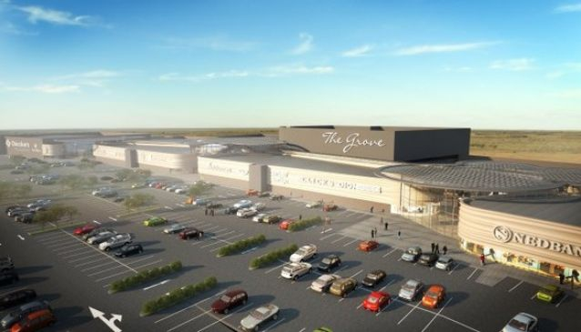
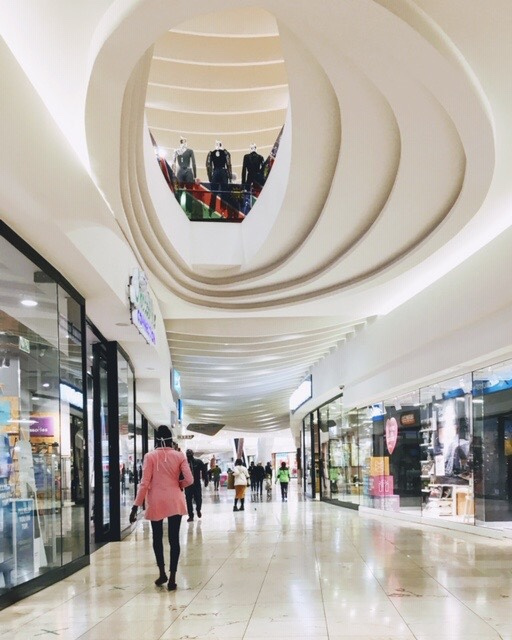
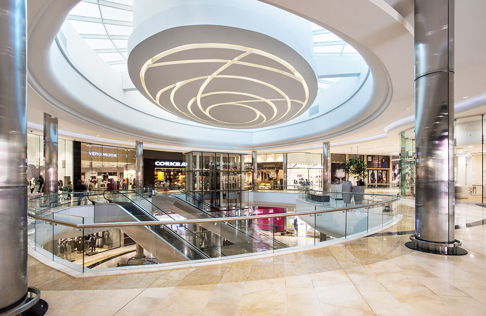

The Grove Mall
The Grove Mall is one of the premier entertainment destinations in Pretoria, providing entertainment for all ages that include an eco-friendly ice rink, 8 state of the art cinema theatres which include two Cine Prestige and an IMAX theatre, ten-pin bowling, 4D simulator, bumper cars, a toddler water play park - and so much more. Featuring a unique inside-out piazza, aptly named "The Grove'' depicting a continental atmosphere with 14 picturesque olive trees, which are adorned with fairy lights under a fairy light rooftop creating the ideal dining, socializing and/ or meeting spot with a selection of well-known restaurants at any time of day. The Grove Mall is home to more than 124 stores and is ideally located on the corner of Lynnwood and Simon Vermooten Roads close to the N1 and N4 highways, opposite The Wilgers Hospital, in the ever growing affluent residential Pretoria East region. The Grove Mall is conveniently situated in the East of Pretoria, on the corner of Lynnwood and Simon Vermooten Roads, and it also located close to the N1 and N4 highways, for ease of access. Surrounded by The Wilgers Hospital, and numerous primary and secondary schools, The Grove Mall strives to offer the community a one-stop, satisfying shopping experience.
  Mon - Fri: 8am - 9pm
Sat: 8am - 10am | Sun: 8am - 9pm
Public Holidays trade as Sundays.The mall is not open for trade on 25 December, and only selected stores trade on 1 January and Good Friday. Restaurants trade until late.
Public Holidays trade as Sundays.The mall is not open for trade on 25 December, and only selected stores trade on 1 January and Good Friday. Restaurants trade until late.